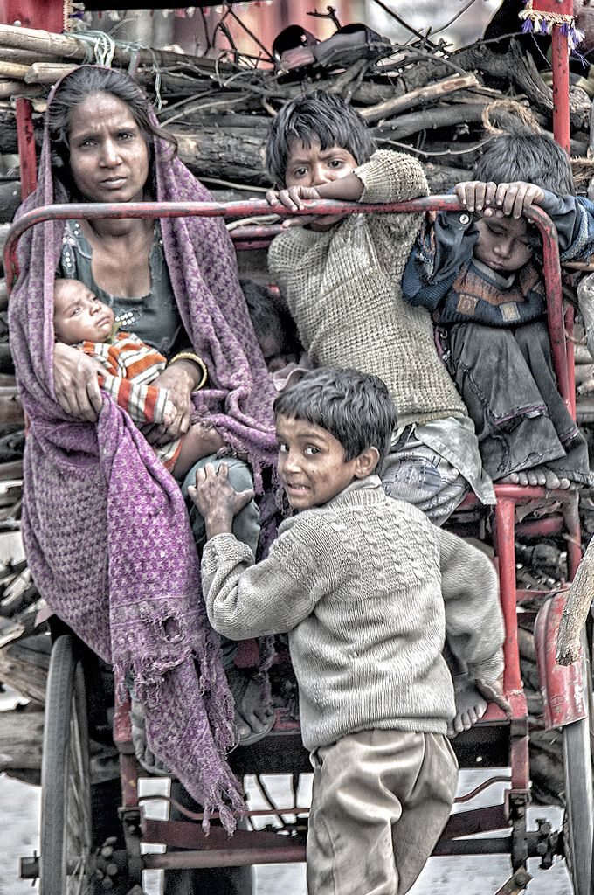

Our India Location
Namste Everyone

Indore
_ _ elephant journal.jpeg)
Benglore

Donating to charity is a major mood-booster. The knowledge that you’re helping others is hugely empowering and, in turn, can make you feel happier and more fulfilled. Research has identified a link between making a donation to charity and increased activity in the area of the brain that registers pleasure – proving that as the old adage goes, it really is far better to give than to receive.
When we give and share, we make our lives more fulfilling. When we help others for a better life, we feel the inner joy that stays with us lifelong. We invite you to join our family of donors and experience the joy of giving by helping vulnerable children overcome the challenges in their lives.
We urge you to play your part in gifting a meaningful childhood to underprivileged children. Through your contributions, we can reach more children and support their various needs.
We has been providing children, and their families, essential and urgent support towards more fulfilling lives. Our community of supporters, like yourself, has been an integral part of this joyful journey of giving children the best start in life
Namste Everyone
Many people are concerned that their donations to charity may be reduced by tax or administrative costs, preventing the full amount from reaching the people or causes they really want to help. Thankfully there are ways to make the most of every donation to charity.

.jpeg)

What is the benefit of doing Charity (Donation) and other good deeds in life?

When you do charity, when you help someone who is really in need, then that soul, on a physical level, feels a sigh of relief, and the sigh of relief from that soul brings positive vibrations towards you. These good deeds that you do bring you merit, which helps you go deep inside. You should have certain merit in order to go into meditation also – not everybody can do it. When you do some charity and good work, then so many souls, so many people, feel happy. Their happiness comes to you as a blessing and that blessing helps you go deep in meditation.

"The most beautiful moments in life are moments when you are expressing your joy, not when you are seeking it." "If you resist change, you resist life." "Too many people are hungry, not because there is a dearth of food. It is because there is a dearth of love and care in human hearts."